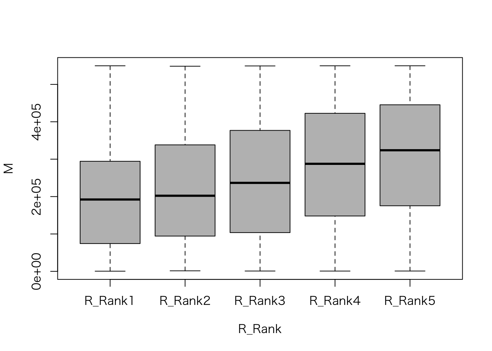

UniformSamples <- as.data.frame(matrix(runif(1*100, min=0, max=1), ncol=100))
rownames(UniformSamples) <- "sample"
colnames(UniformSamples) <- paste("obs", 1:100, sep="")照井伸彦・佐藤忠彦（2022）『現代マーケティング・リサーチ—市場を読み解くデータ分析 新版』有斐閣 は，Rを用いたマーケティング・リサーチの入門書として位置づけられる。
本書の想定読者は，Rを初めて使用する学生であり，プログラミングに戸惑うことが予想されるため，Rコマンダーを利用して解説している。 しかし，Rに慣れた読者にとっては，Rコマンダーの処理がブラックボックス化されており，かえって分かりにくい。 そこで，本サイトでは，Rコマンダーによって生成されたコードと，それと同じ処理をRに習熟したユーザーが記述する場合のコードを並べて示し，理解を助ける構成としている。
また，本書にはいくつか誤植があり，本書の指示通りに操作を進めると，Rコマンダーの利用において行き詰まる箇所がある。 そのような部分については適宜修正しながら読み進めることを推奨する。
第3章 サンプリング
4 単純無作為サンプリング
4.1 Rコマンダーによる乱数表作成
▶ Rコマンダーによって生成されたコード（p. 37）
▶ 手入力するコード
x <- UniformSamples * 100
rx <- round(x) + 1
ux <- unique(rx)
ux[1:10]▶ 一般的なRコード
乱数を生成する際に，あらかじめ set.seed() を実行しておくと，同じ操作を繰り返したときに同じ乱数を再現できる。
set.seed(100)set.seed() のかっこ中の数字は何でもよい。
ux <- unique(ceiling(runif(100, min = 0, max = 100)))
ux[1:10] [1] 31 26 56 6 47 49 82 38 55 18または
ux <- sample(1:100, 100, replace = FALSE)
ux[1:10] [1] 82 53 3 5 44 85 28 52 25 42第5章 市場反応分析（I）
3 相関分析
3.2 売上と価格のデータ：散布図の作成
▶ Rコマンダーによって生成されたコード（p. 84）
Dataset <- read.table(file.choose(), header=TRUE, stringsAsFactors=TRUE, sep="", na.strings="NA", dec=".", strip.white=TRUE)
scatterplot(売上~価格, regLine=FALSE, smooth=FALSE, boxplots=FALSE, data=Dataset)▶ 一般的なRコード
library(car)
Dataset <- read.csv(file.choose(), header = TRUE, sep = "", strip.white = TRUE)
names(Dataset)[1] <- "売上数量"図5.2の縦軸が「売上数量」となっていたため，列名を変更した。 一般的に「売上」は売上高を指すため，価格と売上の相関関係を図示するのはやや不自然である（価格が上がれば，売上数量が一定の場合，売上高も上昇する）。 この点を踏まえると，本書では図が修正されたものの，本文の修正が反映されないまま出版された可能性があるのではないだろうか。 なお，p. 102の本文では「売上数量」と明確に同じ意味で使わる「売上」の記述が見られる。
Dataset 売上数量 価格 販促
1 2052 840 0
2 2105 820 0
3 2450 790 1
4 2131 780 0
5 2806 640 1
6 2532 710 0
7 3650 350 1
8 2968 560 0
9 2605 780 1
10 2652 640 0
11 3062 600 1
12 3237 510 1
13 2831 480 0scatterplot(売上数量 ~ 価格, regLine = FALSE, smooth = FALSE, boxplots = FALSE, las = 1, data = Dataset)
scatterplot() は car パッケージの関数であるため，最初に car パッケージをロードしている。
あるいは，次のように汎用的な作図関数 plot() を使ってもよい。
plot(売上数量 ~ 価格, las = 1, data = Dataset)
3.3 売上と価格に相関はあるか：標本相関係数の検定
▶ Rコマンダーによって生成されたコード（p. 87）
with(Dataset, cor.test(価格, 売上, alternative="two.sided", method="pearson"))▶ 一般的なRコード
cor.test(Dataset$価格, Dataset$売上数量, alternative = "two.sided", method = "pearson")
Pearson's product-moment correlation
data: Dataset$価格 and Dataset$売上数量
t = -8.1457, df = 11, p-value = 5.5e-06
alternative hypothesis: true correlation is not equal to 0
95 percent confidence interval:
-0.9780506 -0.7661642
sample estimates:
cor
-0.9261709 4 売上と価格の市場反応分析：回帰モデル
▶ Rコマンダーによって生成されたコード（p. 91）
RegModel.1 <- lm(売上~価格, data=Dataset)
summary(RegModel.1)▶ 一般的なRコード
RegModel_1 <- lm(売上数量 ~ 価格, data = Dataset)
summary(RegModel_1)
Call:
lm(formula = 売上数量 ~ 価格, data = Dataset)
Residuals:
Min 1Q Median 3Q Max
-368.25 -110.38 -0.84 124.15 269.81
Coefficients:
Estimate Std. Error t value Pr(>|t|)
(Intercept) 4581.7523 236.7640 19.352 7.61e-10 ***
価格 -2.8802 0.3536 -8.146 5.50e-06 ***
---
Signif. codes: 0 '***' 0.001 '**' 0.01 '*' 0.05 '.' 0.1 ' ' 1
Residual standard error: 184.1 on 11 degrees of freedom
Multiple R-squared: 0.8578, Adjusted R-squared: 0.8449
F-statistic: 66.35 on 1 and 11 DF, p-value: 5.5e-06昔は変数名（先頭ではなく途中）に . が使用されることもあったが，最近は使用しないのが一般的である。
4.1 価格反応係数推定値の精度と信頼区間
▶ Rコマンダーによって生成されたコード（p. 93）
Confint(RegModel.1, level=0.95)▶ 一般的なRコード
Confint(RegModel_1, level = 0.95) Estimate 2.5 % 97.5 %
(Intercept) 4581.752298 4060.638183 5102.866414
価格 -2.880209 -3.658452 -2.101967Confint() は car パッケージの関数である。
5 複数の説明変数を持つ市場反応分析：重回帰モデル
5.1 価格と販売促進の効果
▶ Rコマンダーによって生成されたコード（p. 98）
RegModel.2 <- lm(売上~価格+販促, data=Dataset)
summary(RegModel.2)▶ 一般的なRコード
RegModel_2 <- lm(売上数量 ~ 価格 + 販促, data = Dataset)
summary(RegModel_2)
Call:
lm(formula = 売上数量 ~ 価格 + 販促, data = Dataset)
Residuals:
Min 1Q Median 3Q Max
-182.876 -54.165 0.597 63.301 162.349
Coefficients:
Estimate Std. Error t value Pr(>|t|)
(Intercept) 4263.2262 148.6279 28.684 6.18e-11 ***
価格 -2.6028 0.2077 -12.531 1.94e-07 ***
販促 297.1607 60.1706 4.939 0.000588 ***
---
Signif. codes: 0 '***' 0.001 '**' 0.01 '*' 0.05 '.' 0.1 ' ' 1
Residual standard error: 104.1 on 10 degrees of freedom
Multiple R-squared: 0.9586, Adjusted R-squared: 0.9504
F-statistic: 115.9 on 2 and 10 DF, p-value: 1.209e-076 弾力性測定モデル
6.1 交差価格弾力性による競合関係の測定
▶ Rコマンダーによって生成されたコード（p. 105）
Dataset <- read.table(file.choose(), header=TRUE, stringsAsFactors=TRUE, sep="", na.strings="NA", dec=".", strip.white=TRUE)
Dataset$LY1 <- with(Dataset, log(Y1))
Dataset$LX1 <- with(Dataset, log(X1))
Dataset$LX2 <- with(Dataset, log(X2))
RegModel.3 <- lm(LY1~LX1+LX2, data=Dataset)
summary(RegModel.3)▶ 一般的なRコード
Dataset <- read.table(file.choose(), header = TRUE, sep = "", strip.white = TRUE)
Dataset$LY1 <- log(Dataset$Y1)
Dataset$LX1 <- log(Dataset$X1)
Dataset$LX2 <- log(Dataset$X2)
RegModel_3 <- lm(LY1 ~ LX1 + LX2, data = Dataset)
summary(RegModel_3)
Call:
lm(formula = LY1 ~ LX1 + LX2, data = Dataset)
Residuals:
Min 1Q Median 3Q Max
-0.52555 -0.13583 -0.05818 0.18692 0.38784
Coefficients:
Estimate Std. Error t value Pr(>|t|)
(Intercept) 7.720 7.097 1.088 0.286
LX1 -7.033 1.290 -5.451 9.08e-06 ***
LX2 6.504 1.187 5.479 8.42e-06 ***
---
Signif. codes: 0 '***' 0.001 '**' 0.01 '*' 0.05 '.' 0.1 ' ' 1
Residual standard error: 0.2199 on 27 degrees of freedom
Multiple R-squared: 0.6221, Adjusted R-squared: 0.5941
F-statistic: 22.22 on 2 and 27 DF, p-value: 1.973e-06第6章 市場の発見と知覚マップ
4 知覚マップの作成
5 Rコマンダーでの手順
▶ Rコマンダーによって生成されたコード（p. 119）
Dataset <- read.table("clipboard", header=TRUE, stringsAsFactors=TRUE, sep="¥t", na.strings="NA", dec=".", strip.white=TRUE)
local({
.FA <- factanal(~キャンペーンイベント+パッケージデザイン+広告宣伝+素材栄養素+味, factors=2, rotation="varimax", scores="regression", data=Dataset)
print(.FA)
Dataset <<- within(Dataset, {
F2 <- .FA$scores[,2]
F1 <- .FA$scores[,1]
})
})
scatterplot(F2~F1, regLine=FALSE, smooth=FALSE, id=list(method='identify'), boxplots=FALSE, xlab="マーケティング因子", ylab="製品因子", data=Dataset)▶ 一般的なRコード
library(car)
Dataset <- read.csv("clipboard", header = TRUE, sep = "¥t")
FA <- factanal(
~ キャンペーンイベント + パッケージデザイン + 広告宣伝 + 素材栄養素 + 味,
factors = 2,
rotation = "varimax",
scores = "regression",
data = Dataset
)
print(FA)
Dataset$F1 <- FA$scores[, 1]
Dataset$F2 <- FA$scores[, 2]
rownames(Dataset) <- Dataset$製品名
scatterplot(
F2 ~ F1,
regLine = FALSE,
smooth = FALSE,
id = list(method = 'identify'),
boxplots = FALSE,
xlab = "マーケティング因子",
ylab = "製品因子",
data = Dataset
)
Call:
factanal(x = ~キャンペーンイベント + パッケージデザイン + 広告宣伝 + 素材栄養素 + 味, factors = 2, data = Dataset, scores = "regression", rotation = "varimax", rownames = 1)
Uniquenesses:
キャンペーンイベント パッケージデザイン 広告宣伝
0.158 0.318 0.005
素材栄養素 味
0.407 0.005
Loadings:
Factor1 Factor2
キャンペーンイベント 0.886 0.237
パッケージデザイン 0.696 0.445
広告宣伝 0.985 0.158
素材栄養素 0.119 0.761
味 0.371 0.926
Factor1 Factor2
SS loadings 2.392 1.715
Proportion Var 0.478 0.343
Cumulative Var 0.478 0.821
Test of the hypothesis that 2 factors are sufficient.
The chi square statistic is 4.16 on 1 degree of freedom.
The p-value is 0.0415 
1つの関数が長い場合は，引数のカンマの後で改行した方が見やすいため，コードを書く際に改行を入れるのが一般的である。 このとき，改行した行の先頭にはスペースを2つ入れる。
なお，クリップボードからデータを読むコードはOSによって異なる。 上に示したコードはWindowsの場合であり，macOSの場合，Dataset <- read.csv(pipe("pbpaste"), header = TRUE, sep = "\t") とする。 タブを表す記号 ¥t はWindowsの場合であり，macOSでは \t である。
また，Rコマンダーでは因子分析の結果を .FA に代入している。 . で始まる変数名はユーザーから隠す意図があり，この場面では意図通りに変数名を用いている（ただし，local() を使っているため，. で始まる必要はないのではあるが…）。 ここでは，ユーザーから隠す必然性はないため，.FA の代わりに FA という変数名を一般的なRコードで用いた。
さらに，本文の指示通りだと，図6.6の知覚マップには製品名ではなく，データフレーム Dataset の行番号が表示されることになる。 知覚マップ上に製品名を表示するには，rownames(Dataset) <- Dataset$製品名 を追加するか，あるいは，read.csv() の引数に row.names = 1 を指定する必要がある，
6 その他の問題
6.2 共通因子数の設定
▶ Rコマンダーによって生成されたコード（p. 84）
local({
.PC <- princomp(~キャンペーンイベント+パッケージデザイン+広告宣伝+素材栄養素+味, cor=TRUE, data=Dataset)
cat("\nComponent loadings:\n")
print(unclass(loadings(.PC)))
cat("\nComponent variances:\n")
print(.PC$sd^2)
cat("\n")
print(summary(.PC))
screeplot(.PC)
})▶ 一般的なRコード
PC <- princomp( ~ キャンペーンイベント + パッケージデザイン + 広告宣伝 + 素材栄養素 + 味, cor = TRUE, data = Dataset)
result <- list(
"Component Loadings" = unclass(loadings(PC)),
"Component Variances" = PC$sd^2,
"Summary" = summary(PC)
)
print(result)$`Component Loadings`
Comp.1 Comp.2 Comp.3 Comp.4 Comp.5
キャンペーンイベント 0.4714356 0.3769183 0.4597706 0.3613854 0.5419342
パッケージデザイン 0.4781955 0.1375293 -0.7804739 -0.2277185 0.3023567
広告宣伝 0.4871404 0.3588612 0.2664691 -0.4602804 -0.5924939
素材栄養素 0.3058296 -0.7333420 0.2987866 -0.4441059 0.2866606
味 0.4671617 -0.4152667 -0.1385361 0.6391062 -0.4262212
$`Component Variances`
Comp.1 Comp.2 Comp.3 Comp.4 Comp.5
3.2672933 1.1601639 0.3588058 0.1815096 0.0322274
$Summary
Importance of components:
Comp.1 Comp.2 Comp.3 Comp.4 Comp.5
Standard deviation 1.8075656 1.0771091 0.59900398 0.42603945 0.179519902
Proportion of Variance 0.6534587 0.2320328 0.07176115 0.03630192 0.006445479
Cumulative Proportion 0.6534587 0.8854914 0.95725260 0.99355452 1.000000000screeplot(PC)
screeplot(PC, type = "lines")スクリープロットを描く際，screeplot(PC) の引数として type = "lines" を指定すると折れ線グラフになり，こちらが一般的に用いられる。
また，主成分分析を使わずに相関行列の固有値を計算し，スクリープロットを描く方法もある。 因子分析の際にはこの方法が使われることがある。
cor_matrix <- cor(Dataset[, c("キャンペーンイベント", "パッケージデザイン", "広告宣伝", "素材栄養素", "味")])
ev <- eigen(cor_matrix)$values
plot(ev, type = "b", main = "スクリープロット", xlab = "因子数", ylab = "固有値", pch = 19)
abline(h = 1, col = "red", lty = 2)
さらに，psych パッケージには簡単にスクリープロットを描く関数が用意されている。
library(psych)
fa.parallel(cor_matrix, n.obs = nrow(Dataset), fa = "fa")
Parallel analysis suggests that the number of factors = 2 and the number of components = NA fa.parallel() は，単なる固有値のプロットではなく，実データの固有値とランダムデータから計算された固有値を比較するものである。
7 サブマーケットと市場構造
▶ Rコマンダーによって生成されたコード（p. 84）
HClust.1 <- hclust(dist(model.matrix(~-1 + F1+F2, Dataset)) , method= "ward")
plot(HClust.1, main= "Cluster Dendrogram for Solution HClust.1", xlab= "Observation Number in Data Set Dataset", sub="Method=ward; Distance=euclidian")▶ 一般的なRコード
dist_1 <- dist(Dataset[, c("F1", "F2")], method = "euclidean")
HClust_1 <- hclust(dist_1, method = "ward.D2")
plot(
HClust_1,
main = "Cluster Dendrogram for Solution HClust_1",
xlab = "Observation Number in Data Set Dataset",
sub = "Method=ward.D2; Distance=euclidean"
)ウォード法は ward や ward.D ではなく，ward.D2 を指定する。 詳細な説明は関数 hclust() のヘルプを参照のこと。
なお，知覚マップのところで rownames(Dataset) <- Dataset$製品名 を追加した場合は，図6.9とは異なり，デンドログラムに製品名が表示される。 製品名ではなく番号を使ってデンドログラムを描くには，次のコードを実行する。
rownames(Dataset) <- 1:nrow(Dataset)
dist_1 <- dist(Dataset[, c("F1", "F2")], method = "euclidean")
HClust_1 <- hclust(dist_1, method = "ward.D2")
plot(
HClust_1,
main = "Cluster Dendrogram for Solution HClust_1",
xlab = "Observation Number in Data Set Dataset",
sub = "Method=ward.D2; Distance=euclidean"
)
以下は，図6.10の作図のためのコードである。 なお，クラスター分析に ward.D2 を使用しているため，クラスター間距離が本書の記述とは異なる。
Dataset$Cluster <- as.factor(cutree(HClust_1, h = 3))
par(mfrow = c(1, 2))
plot(
Dataset$F1, Dataset$F2,
col = as.numeric(Dataset$Cluster),
pch = 16,
xlab = "マーケティング因子", ylab = "製品因子",
main = "クラスター間距離3"
)
text(Dataset$F1, Dataset$F2, labels = Dataset$製品名, pos = 4, cex = 1)
for (k in unique(Dataset$Cluster)) {
dataEllipse(
Dataset$F1[Dataset$Cluster == k],
Dataset$F2[Dataset$Cluster == k],
add = TRUE, col = k, lty = 2,
levels = 0.5)
}
Dataset$Cluster <- as.factor(cutree(HClust_1, h = 1))
plot(
Dataset$F1, Dataset$F2,
col = as.numeric(Dataset$Cluster),
pch = 16,
xlab = "マーケティング因子", ylab = "製品因子",
main = "クラスター間距離1"
)
text(Dataset$F1, Dataset$F2, labels = Dataset$製品名, pos = 4, cex = 1)
for (k in unique(Dataset$Cluster)) {
cluster_data <- Dataset[Dataset$Cluster == k, c("F1", "F2")]
if (nrow(cluster_data) > 1) {
dataEllipse(
cluster_data$F1,
cluster_data$F2,
add = TRUE, col = k, lty = 2,
levels = 0.5)
}
}
dataEllipse() はデータのばらつきをもとに楕円を描くため，2点しかないと警告が出て，直線が描かれる点に注意が必要である。
図を横に並べて表示する設定を行ったため，次のコードを実行してデフォルトの設定に戻しておく。
par(mfrow = c(1, 1))第7章 市場セグメンテーション
5 Rコマンダーによる市場セグメンテーション
5.2 因子分析
▶ Rコマンダーによって生成されたコード（p. 149）
Dataset <- read.table(file.choose(), header=TRUE, stringsAsFactors=TRUE,
sep=",", na.strings="NA", dec=".", strip.white=TRUE)
local({
.FA <- factanal(~q1+q2+q3+q4+q5+q6+q7+q8+q9+q10+q11+q12+q13+q14+q15+q16+q17+q18+q19+q20+q21+q22+q23+q24+q25+q26+q27, factors=4,
rotation="varimax", scores="regression", data=Dataset)
print(.FA)
Dataset <<- within(Dataset, {
F4 <- .FA$scores[,4]
F3 <- .FA$scores[,3]
F2 <- .FA$scores[,2]
F1 <- .FA$scores[,1]
})
})▶ 手入力するコード
remove(.FA)
.FA <- factanal(~q1+q2+q3+q4+q5+q6+q7+q8+q9+q10+q11+q12+q13+q14+q15+q16+q17+q18+q19+q20+q21+q22+q23+q24+q25+q26+q27, factors=4, rotation="varimax", scores="regression", data=Dataset)
.FA
Dataset$FA1 <- .FA$scores[,1]
Dataset$FA2 <- .FA$scores[,2]
Dataset$FA3 <- .FA$scores[,3]
Dataset$FA4 <- .FA$scores[,4]
print(.FA,cutoff=0,sort=TRUE)▶ 一般的なRコード
Dataset <- read.csv(file.choose(), header = TRUE)
FA <- factanal(
~ q1 + q2 + q3 + q4 + q5 + q6 + q7 + q8 + q9 + q10 + q11 + q12 + q13 + q14 + q15 + q16 + q17 + q18 + q19 + q20 + q21 + q22 + q23 + q24 + q25 + q26 + q27,
factors = 4,
rotation = "varimax",
scores = "regression",
data = Dataset
)
print(FA)
Call:
factanal(x = ~q1 + q2 + q3 + q4 + q5 + q6 + q7 + q8 + q9 + q10 + q11 + q12 + q13 + q14 + q15 + q16 + q17 + q18 + q19 + q20 + q21 + q22 + q23 + q24 + q25 + q26 + q27, factors = 4, data = Dataset, scores = "regression", rotation = "varimax")
Uniquenesses:
q1 q2 q3 q4 q5 q6 q7 q8 q9 q10 q11 q12 q13
0.857 0.924 0.557 0.743 0.532 0.759 0.654 0.755 0.645 0.705 0.676 0.318 0.179
q14 q15 q16 q17 q18 q19 q20 q21 q22 q23 q24 q25 q26
0.220 0.160 0.550 0.143 0.053 0.262 0.657 0.864 0.492 0.443 0.516 0.398 0.106
q27
0.163
Loadings:
Factor1 Factor2 Factor3 Factor4
q1 0.251 0.261
q2 0.257
q3 0.184 0.638
q4 0.138 0.471
q5 0.164 0.659
q6 0.105 0.459 0.119
q7 0.110 0.238 0.522
q8 0.281 0.177 0.299 0.212
q9 0.234 0.234 0.481 0.118
q10 0.355 0.165 0.208 0.314
q11 0.408 0.135 0.127 0.351
q12 0.805 0.156
q13 0.898
q14 0.869 0.100
q15 0.901 0.146
q16 0.541 0.264 0.284
q17 0.496 0.121 0.768
q18 0.478 0.839
q19 0.803 0.286
q20 0.360 0.248 0.332 0.204
q21 0.329 0.109 0.101
q22 0.474 0.531
q23 0.550 0.500
q24 0.107 0.555 0.405
q25 0.693 0.331
q26 0.131 0.911 0.177 0.121
q27 0.148 0.880 0.175
Factor1 Factor2 Factor3 Factor4
SS loadings 5.206 3.376 3.187 1.899
Proportion Var 0.193 0.125 0.118 0.070
Cumulative Var 0.193 0.318 0.436 0.506
Test of the hypothesis that 4 factors are sufficient.
The chi square statistic is 2835.86 on 249 degrees of freedom.
The p-value is 0 Dataset$F1 <- FA$scores[, 1]
Dataset$F2 <- FA$scores[, 2]
Dataset$F3 <- FA$scores[, 3]
Dataset$F4 <- FA$scores[, 4]
print(FA, cutoff = 0, sort = TRUE)
Call:
factanal(x = ~q1 + q2 + q3 + q4 + q5 + q6 + q7 + q8 + q9 + q10 + q11 + q12 + q13 + q14 + q15 + q16 + q17 + q18 + q19 + q20 + q21 + q22 + q23 + q24 + q25 + q26 + q27, factors = 4, data = Dataset, scores = "regression", rotation = "varimax")
Uniquenesses:
q1 q2 q3 q4 q5 q6 q7 q8 q9 q10 q11 q12 q13
0.857 0.924 0.557 0.743 0.532 0.759 0.654 0.755 0.645 0.705 0.676 0.318 0.179
q14 q15 q16 q17 q18 q19 q20 q21 q22 q23 q24 q25 q26
0.220 0.160 0.550 0.143 0.053 0.262 0.657 0.864 0.492 0.443 0.516 0.398 0.106
q27
0.163
Loadings:
Factor1 Factor2 Factor3 Factor4
q12 0.805 0.045 0.156 0.090
q13 0.898 0.041 0.078 0.089
q14 0.869 0.086 0.100 0.080
q15 0.901 0.068 0.045 0.146
q16 0.541 0.083 0.264 0.284
q19 0.803 0.066 0.085 0.286
q23 0.065 0.550 0.500 0.020
q24 0.107 0.555 0.405 0.025
q25 0.081 0.693 0.331 0.071
q26 0.131 0.911 0.177 0.121
q27 0.148 0.880 0.175 0.099
q3 0.010 0.184 0.638 -0.040
q5 0.039 0.164 0.659 0.070
q7 0.110 0.238 0.522 0.067
q22 0.011 0.474 0.531 0.026
q17 0.496 0.076 0.121 0.768
q18 0.478 0.075 0.096 0.839
q1 0.096 0.251 0.261 0.050
q2 0.100 0.006 0.257 0.017
q4 0.095 0.138 0.471 0.084
q6 0.070 0.105 0.459 0.119
q8 0.281 0.177 0.299 0.212
q9 0.234 0.234 0.481 0.118
q10 0.355 0.165 0.208 0.314
q11 0.408 0.135 0.127 0.351
q20 0.360 0.248 0.332 0.204
q21 0.329 0.109 0.074 0.101
Factor1 Factor2 Factor3 Factor4
SS loadings 5.206 3.376 3.187 1.899
Proportion Var 0.193 0.125 0.118 0.070
Cumulative Var 0.193 0.318 0.436 0.506
Test of the hypothesis that 4 factors are sufficient.
The chi square statistic is 2835.86 on 249 degrees of freedom.
The p-value is 0 5.3 クラスター分析
▶ Rコマンダーによって生成されたコード（p. 153）
.cluster <- KMeans(model.matrix(~-1 + F1 + F2 + F3 + F4, Dataset), centers = 4, iter.max = 10, num.seeds = 10)
.cluster$size # Cluster Sizes
.cluster$centers # Cluster Centroids
.cluster$withinss # Within Cluster Sum of Squares
.cluster$tot.withinss # Total Within Sum of Squares
.cluster$betweenss # Between Cluster Sum of Squares
biplot(princomp(model.matrix(~-1 + F1 + F2 + F3 + F4, Dataset)), xlabs = as.character(.cluster$cluster))
Dataset$KMeans <- assignCluster(model.matrix(~-1 + F1 + F2 + F3 + F4, Dataset), Dataset, .cluster$cluster)
remove(.cluster)
local({
.Table <- with(Dataset, table(KMeans))
cat("\ncounts:\n")
print(.Table)
cat("\npercentages:\n")
print(round(100*.Table/sum(.Table), 2))
})
library(abind, pos=16)
library(e1071, pos=17)
numSummary(Dataset[,c("F1", "F2", "F3", "F4"), drop=FALSE], groups=Dataset$KMeans, statistics=c("mean"), quantiles=c(0,.25,.5,.75,1))▶ 一般的なRコード
set.seed(10)
cluster <- kmeans(Dataset[, c("F1", "F2", "F3", "F4")], centers = 4, iter.max = 10, nstart = 10)
result <- list(
"Cluster Sizes" = cluster$size,
"Cluster Centroids" = cluster$centers,
"Within Cluster Sum of Squares" = cluster$withinss,
"Total Within Sum of Squares" = cluster$tot.withinss,
"Between Cluster Sum of Squares" = cluster$betweenss
)
print(result)$`Cluster Sizes`
[1] 192 202 514 327
$`Cluster Centroids`
F1 F2 F3 F4
1 -0.5953486 0.21550094 0.2528594 1.4000022
2 -0.6171745 -1.40308357 -0.4617852 -0.5133626
3 0.8355935 0.01429324 0.0165523 0.1887794
4 -0.5826265 0.71773692 0.1107759 -0.8016323
$`Within Cluster Sum of Squares`
[1] 453.0426 647.8556 677.8658 696.1054
$`Total Within Sum of Squares`
[1] 2474.869
$`Between Cluster Sum of Squares`
[1] 1907.535主成分分析のバイプロットを描画し，データポイントを K-means 法によるクラスター分析の結果に基づいてラベル付けする。
biplot(princomp(Dataset[, c("F1", "F2", "F3", "F4")]), xlabs = as.character(cluster$cluster))
K-means 法によるクラスター分析の結果を確認する。
Dataset$KMeans <- cluster$cluster
table(Dataset$KMeans)
1 2 3 4
192 202 514 327 round(prop.table(table(Dataset$KMeans)) * 100, 2)
1 2 3 4
15.55 16.36 41.62 26.48 split_data <- split(Dataset[, c("F1", "F2", "F3", "F4")], Dataset$KMeans)
result <- data.frame(セグメント = names(split_data),
t(sapply(split_data, colMeans)),
サンプルサイズ = sapply(split_data, nrow))
print(result) セグメント F1 F2 F3 F4 サンプルサイズ
1 1 -0.5953486 0.21550094 0.2528594 1.4000022 192
2 2 -0.6171745 -1.40308357 -0.4617852 -0.5133626 202
3 3 0.8355935 0.01429324 0.0165523 0.1887794 514
4 4 -0.5826265 0.71773692 0.1107759 -0.8016323 327print(result) の出力結果の行の並び順が表7.9と異なっていても問題ない。
5.4 セグメントのプロファイリング
表7.10〜表7.13もRを使って作成できる。
split_data <- split(Dataset, Dataset$KMeans)
gender <- round(prop.table(sapply(split_data, function(df) table(df$性別)), margin = 2) * 100, 1)
gender_table <- data.frame(セグメント = names(split_data), t(gender))
names(gender_table)[-1] <- c("男性", "女性")
gender_table セグメント 男性 女性
1 1 60.4 39.6
2 2 69.3 30.7
3 3 65.4 34.6
4 4 70.3 29.7data.frame(セグメント = names(split_data),
平均年齢 = sapply(split_data, function(df) round(mean(df$年齢), 1))) セグメント 平均年齢
1 1 44.0
2 2 39.9
3 3 42.1
4 4 45.5data.frame(セグメント = names(split_data),
投資経験年数 = sapply(split_data, function(df) round(mean(df$投資経験年数), 1))) セグメント 投資経験年数
1 1 8.3
2 2 6.3
3 3 7.3
4 4 9.2transaction <- round(prop.table(sapply(split_data, function(df) table(df$取引形態)), margin = 2) * 100, 1)
transaction_table <- data.frame(セグメント = names(split_data), t(transaction))
names(transaction_table)[-1] <- c("対面取引", "インターネット取引", "対面とインターネットの併用")
transaction_table セグメント 対面取引 インターネット取引 対面とインターネットの併用
1 1 20.3 64.1 15.6
2 2 14.9 78.2 6.9
3 3 15.8 72.0 12.3
4 4 13.1 74.9 11.9さらに，図7.4もRを使って作成できる。
gender_counts <- table(Dataset$性別)
names(gender_counts) <- c("男性", "女性")
barplot(gender_counts)
Dataset$年齢区分 <- cut(Dataset$年齢,
breaks = seq(20, max(Dataset$年齢) + 5, by = 5),
right = FALSE)
barplot(table(Dataset$年齢区分), col = "skyblue", las = 2)
細かい調整が必要な場合は，自分でカスタマイズ可能である。 例えば，棒グラフの上に数値を表示したい場合は，次のようにする。
bar_positions <- barplot(gender_counts, ylim = c(0, max(gender_counts) * 1.2), col = adjustcolor(c("blue", "red"), alpha.f = .5))
text(bar_positions, gender_counts, labels = gender_counts, pos = 3, cex = 1, col = "black")
第8章 製品開発
4 コンジョイント分析
4.2 個人分析：Rコマンダーによる分析
▶ Rコマンダーによって生成されたコード（p. 172）
Dataset <- read.table(file.choose(), header=TRUE, stringsAsFactors=TRUE, sep="", na.strings="NA", dec=".", strip.white=TRUE)
RegModel.1 <- lm(全体効用~X2年+X4時間+X6時間+シルバー+赤, data=Dataset)
summary(RegModel.1)▶ 一般的なRコード
Dataset <- read.table(file.choose(), header = TRUE, sep = "")
RegModel_1 <- lm(全体効用 ~ X2年 + X4時間 + X6時間 + シルバー + 赤, data = Dataset)
summary(RegModel_1)
Call:
lm(formula = 全体効用 ~ X2年 + X4時間 + X6時間 + シルバー +
赤, data = Dataset)
Residuals:
Min 1Q Median 3Q Max
-3.0556 -0.8889 0.4167 1.0278 2.4444
Coefficients:
Estimate Std. Error t value Pr(>|t|)
(Intercept) -0.5556 1.0199 -0.545 0.59591
X2年 6.7778 0.8327 8.139 3.15e-06 ***
X4時間 2.5000 1.0199 2.451 0.03052 *
X6時間 3.5000 1.0199 3.432 0.00497 **
シルバー 6.3333 1.0199 6.210 4.52e-05 ***
赤 7.6667 1.0199 7.517 7.07e-06 ***
---
Signif. codes: 0 '***' 0.001 '**' 0.01 '*' 0.05 '.' 0.1 ' ' 1
Residual standard error: 1.766 on 12 degrees of freedom
Multiple R-squared: 0.9227, Adjusted R-squared: 0.8905
F-statistic: 28.65 on 5 and 12 DF, p-value: 2.819e-06conjoint1.txt はタブ区切りテキストのように見えるが，Rコマンダーで「フィールドの区切り記号」を「タブ」にするとエラーが出て読み込めない。 「空白」にすると読み込める。 よく見ると，conjoint1.txt のヘッダーのみスペース区切りになっている。 このようなデータは珍しい。
なお，数字で始まる列名の先頭に X を付けたくない場合は，read.table() の引数に check.names = FALSE を指定すればよい。
Dataset <- read.table(file.choose(), header = TRUE, sep = "", check.names = FALSE)
Dataset カードNo. 6時間 4時間 2年 赤 シルバー 選好順位 全体効用
1 1 1 0 0 1 0 7 12
2 2 1 0 0 0 1 9 10
3 3 1 0 0 0 0 17 2
4 4 1 0 1 1 0 1 18
5 5 1 0 1 0 1 6 13
6 6 1 0 1 0 0 8 11
7 7 0 1 0 1 0 10 9
8 8 0 1 0 0 1 12 7
9 9 0 1 0 0 0 16 3
10 10 0 1 1 1 0 2 17
11 11 0 1 1 0 1 3 16
12 12 0 1 1 0 0 11 8
13 13 0 0 0 1 0 14 5
14 14 0 0 0 0 1 13 6
15 15 0 0 0 0 0 18 1
16 16 0 0 1 1 0 5 14
17 17 0 0 1 0 1 4 15
18 18 0 0 1 0 0 15 4ただし，lm() を実行するときには，列名をバッククオート ` で括る必要がある。
RegModel_1 <- lm(全体効用 ~ `2年` + `4時間` + `6時間` + シルバー + 赤, data = Dataset)
summary(RegModel_1)
Call:
lm(formula = 全体効用 ~ `2年` + `4時間` + `6時間` +
シルバー + 赤, data = Dataset)
Residuals:
Min 1Q Median 3Q Max
-3.0556 -0.8889 0.4167 1.0278 2.4444
Coefficients:
Estimate Std. Error t value Pr(>|t|)
(Intercept) -0.5556 1.0199 -0.545 0.59591
`2年` 6.7778 0.8327 8.139 3.15e-06 ***
`4時間` 2.5000 1.0199 2.451 0.03052 *
`6時間` 3.5000 1.0199 3.432 0.00497 **
シルバー 6.3333 1.0199 6.210 4.52e-05 ***
赤 7.6667 1.0199 7.517 7.07e-06 ***
---
Signif. codes: 0 '***' 0.001 '**' 0.01 '*' 0.05 '.' 0.1 ' ' 1
Residual standard error: 1.766 on 12 degrees of freedom
Multiple R-squared: 0.9227, Adjusted R-squared: 0.8905
F-statistic: 28.65 on 5 and 12 DF, p-value: 2.819e-06実際に自分でデータを扱う際には，こうしたことを考慮しながら，列名をどうするかを決める必要がある。
5 直交表利用によるコンジョイント分析
5.3 集計分析：Rコマンダーによる分析
▶ Rコマンダーによって生成されたコード（p. 179）
Dataset <- read.table(file.choose(), header=TRUE, stringsAsFactors=TRUE, sep="", na.strings="NA", dec=".", strip.white=TRUE)
RegModel.2 <- lm(全体効用~X2年+X4時間+X6時間+シルバー+赤, data=Dataset)
summary(RegModel.2)▶ 一般的なRコード
Dataset <- read.table(file.choose(), header = TRUE, sep = "")
RegModel_2 <- lm(全体効用 ~ X2年 + X4時間 + X6時間 + シルバー + 赤, data = Dataset)
summary(RegModel_2)
Call:
lm(formula = 全体効用 ~ X2年 + X4時間 + X6時間 + シルバー +
赤, data = Dataset)
Residuals:
Min 1Q Median 3Q Max
-2.7667 -0.6875 -0.1500 0.5833 2.7000
Coefficients:
Estimate Std. Error t value Pr(>|t|)
(Intercept) 0.1667 0.3193 0.522 0.603020
X2年 2.2500 0.2560 8.790 1.57e-13 ***
X4時間 1.1333 0.2956 3.834 0.000243 ***
X6時間 0.3667 0.2956 1.240 0.218245
シルバー 3.9000 0.2956 13.194 < 2e-16 ***
赤 4.6000 0.2956 15.563 < 2e-16 ***
---
Signif. codes: 0 '***' 0.001 '**' 0.01 '*' 0.05 '.' 0.1 ' ' 1
Residual standard error: 1.145 on 84 degrees of freedom
Multiple R-squared: 0.8165, Adjusted R-squared: 0.8056
F-statistic: 74.77 on 5 and 84 DF, p-value: < 2.2e-16conjoint2.txt も conjoint1.txt と同様に変わったルール（ヘッダーのみスペース区切りで，他はタブ区切り）でデータが記述されている。
第9章 新製品の普及
6 Rコマンダーによる新製品普及構造の分析
6.1 回帰分析
▶ Rコマンダーによって生成されたコード（p. 199）
Dataset <- read.table(file.choose(), header=TRUE, stringsAsFactors=TRUE,
sep=",", na.strings="NA", dec=".", strip.white=TRUE)
Dataset2 <- subset(Dataset, subset=時点<11)
RegModel.1 <- lm(購買者数~一期前累積購買者数+一期前累積購買者数の二乗, data=Dataset2)
summary(RegModel.1)▶ 手入力するコード
a <- 5.000e+03
b <- 9.983e-02
c <- -3.994e-06
m <- (- b - sqrt(b^2 - 4 * a * c)) / (2 * c)
p <- a / m
q <- p + b
m[1] 50021.69p[1] 0.09995664q[1] 0.1997866本書の指示通りに計算すると，p と q は小数第4位で四捨五入すれば正しい値が計算できたことになる。 ただし，m については四捨五入したとしても値が一致しない。
▶ 一般的なRコード
Dataset <- read.csv(file.choose(), header = TRUE)
Dataset2 <- Dataset[Dataset$時点 < 11, ]
RegModel_1 <- lm(購買者数 ~ 一期前累積購買者数 + 一期前累積購買者数 ^ 2, data = Dataset2)
summary(RegModel_1)
Call:
lm(formula = 購買者数 ~ 一期前累積購買者数 + I(一期前累積購買者数^2),
data = Dataset2)
Residuals:
Min 1Q Median 3Q Max
-4.8250 -1.4318 -0.3015 1.5493 5.1581
Coefficients:
Estimate Std. Error t value Pr(>|t|)
(Intercept) 5.000e+03 2.453e+00 2038.4 < 2e-16 ***
一期前累積購買者数 9.983e-02 2.708e-04 368.7 2.85e-16 ***
I(一期前累積購買者数^2) -3.994e-06 6.104e-09 -654.3 < 2e-16 ***
---
Signif. codes: 0 '***' 0.001 '**' 0.01 '*' 0.05 '.' 0.1 ' ' 1
Residual standard error: 3.051 on 7 degrees of freedom
Multiple R-squared: 1, Adjusted R-squared: 1
F-statistic: 7.471e+05 on 2 and 7 DF, p-value: < 2.2e-16このデータについて，「累積購買者数」，「一期前累積購買者数」，「一期前累積購買者数の二乗」の3つの列がどこで計算されたのかが気になる。 通常は，次のデータが手元にあると考えるのが理に適っているだろう。
Dataset <- Dataset[, 1:2]
Dataset 時点 購買者数
1 1 4998
2 2 5398
3 3 5611
4 4 5574
5 5 5292
6 6 4798
7 7 4157
8 8 3445
9 9 2762
10 10 2141
11 11 1609
12 12 1199
13 13 871
14 14 629
15 15 448このデータから，必要なデータを作成可能である。
Dataset$累積購買者数 <- cumsum(Dataset$購買者数)
Dataset$一期前累積購買者数 <- c(0, head(Dataset$累積購買者数, -1))
Dataset$一期前累積購買者数の二乗 <- Dataset$一期前累積購買者数 ^ 2
Dataset 時点 購買者数 累積購買者数 一期前累積購買者数 一期前累積購買者数の二乗
1 1 4998 4998 0 0
2 2 5398 10396 4998 24980004
3 3 5611 16007 10396 108076816
4 4 5574 21581 16007 256224049
5 5 5292 26873 21581 465739561
6 6 4798 31671 26873 722158129
7 7 4157 35828 31671 1003052241
8 8 3445 39273 35828 1283645584
9 9 2762 42035 39273 1542368529
10 10 2141 44176 42035 1766941225
11 11 1609 45785 44176 1951518976
12 12 1199 46984 45785 2096266225
13 13 871 47855 46984 2207496256
14 14 629 48484 47855 2290101025
15 15 448 48932 48484 2350698256続いて，m，p，q の計算は，lm() の結果を用いて計算することができる。
x <- coef(RegModel_1)
names(x) <- NULL
a <- x[1]
b <- x[2]
c <- x[3]
m <- (- b - sqrt(b^2 - 4 * a * c)) / (2 * c)
p <- a / m
q <- p + b
m[1] 50022.8p[1] 0.09994712q[1] 0.1997775今度は，本書と同じ値が計算された。 続いて，図9.12を作成する。
▶ Rコマンダーによって生成されたコード（p. 203）
Dataset$予測 <- with(Dataset, 5.000e+03+一期前累積購買者数*9.983e-02+一期前累積購買者数の二乗*(-3.994e-06))
with(Dataset, lineplot(時点, 購買者数, 予測))▶ 一般的なRコード
Dataset$予測 <- as.matrix(cbind(1, Dataset[, c("一期前累積購買者数", "一期前累積購買者数の二乗")])) %*% coef(RegModel_1)このとき， predict() 関数を使うと便利である。
Dataset$予測 <- predict(RegModel_1, newdata = Dataset)Rコマンダーでは，RcmdrMisc パッケージの関数 lineplot() で作図しているので，Rコマンダーを使わない場合はこの関数は使えない。 代わりに，次のコードで図を作成できる。
plot(Dataset$時点, Dataset$購買者数, type = "l", col = "black", lwd = 2,
ylim = range(c(Dataset$購買者数, Dataset$予測)),
xlab = "時点", ylab = "", main = "購買者数と予測値の推移")
lines(Dataset$時点, Dataset$予測, col = "red", lwd = 2, lty = 2)
text(Dataset$時点, Dataset$購買者数, labels = "1", pos = 3, offset = -.5, col = "black")
text(Dataset$時点, Dataset$予測, labels = "2", pos = 3, offset = -.5, col = "red")
legend("topright", legend = c("購買者数", "予測"), col = c("black", "red"), lty = c(1, 2), lwd = 2)図9.13にあるような累積購入者数のグラフを作成するには，次のコードを実行する。
plot(Dataset$時点, Dataset$累積購買者数, type = "l", col = "black", lwd = 2, las = 1, ylim = c(0, max(Dataset$累積購買者数)), xlab = "時点", ylab = "累積購買者数", main = "普及パターン")
第10章 顧客の管理
4 Rコマンダーによる顧客管理のための分析
4.1 RFM分析
▶ Rコマンダーによって生成されたコード（p. 220）
Dataset <- read.table(file.choose(), header=TRUE, stringsAsFactors=TRUE,
sep=",", na.strings="NA", dec=".", strip.white=TRUE)
Dataset <- within(Dataset, {
M_Rank <- Recode(M, '0:49999="M_Rank1"; 50000:99999="M_Rank2"; 100000:299999="M_Rank3"; 300000:499999="M_Rank4"; else="M_Rank5"',
as.factor=TRUE, to.value="=", interval=":", separator=";")
})
Dataset <- within(Dataset, {
F_Rank <- Recode(F, '1="F_Rank1"; 2="F_Rank2"; 3:9="F_Rank3"; 10:29="F_Rank4"; else="F_Rank5";', as.factor=TRUE, to.value="=",
interval=":", separator=";")
})
Dataset <- within(Dataset, {
R_Rank <- Recode(R, '0:30="R_Rank5"; 31:60="R_Rank4"; 61:90="R_Rank3"; 91:180="R_Rank2"; else="R_Rank1"; ;', as.factor=TRUE,
to.value="=", interval=":", separator=";")
})
Boxplot(M ~ R_Rank, data=Dataset, id=list(method="y"))
Boxplot(F ~ R_Rank, data=Dataset, id=list(method="y"))
library(mvtnorm, pos=16)
library(survival, pos=16)
library(MASS, pos=16)
library(TH.data, pos=16)
library(multcomp, pos=16)
library(abind, pos=21)
AnovaModel.2 <- aov(M ~ R_Rank, data=Dataset)
summary(AnovaModel.2)
with(Dataset, numSummary(M, groups=R_Rank, statistics=c("mean", "sd")))
local({
.Pairs <- glht(AnovaModel.2, linfct = mcp(R_Rank = "Tukey"))
print(summary(.Pairs)) # pairwise tests
print(confint(.Pairs, level=0.95)) # confidence intervals
print(cld(.Pairs, level=0.05)) # compact letter display
old.oma <- par(oma=c(0, 5, 0, 0))
plot(confint(.Pairs))
par(old.oma)
})▶ 一般的なRコード
Dataset <- read.csv(file.choose(), header = TRUE)
Dataset$M_Rank <- cut(
Dataset$M,
breaks = c(-Inf, 49999, 99999, 299999, 499999, Inf),
labels = c("M_Rank1", "M_Rank2", "M_Rank3", "M_Rank4", "M_Rank5"),
right = TRUE
)
Dataset$F_Rank <- cut(
Dataset$F,
breaks = c(-Inf, 1, 2, 9, 29, Inf),
labels = c("F_Rank1", "F_Rank2", "F_Rank3", "F_Rank4", "F_Rank5"),
right = TRUE
)
Dataset$R_Rank <- cut(
Dataset$R,
breaks = c(-Inf, 30, 60, 90, 180, Inf),
labels = c("R_Rank5", "R_Rank4", "R_Rank3", "R_Rank2", "R_Rank1"),
right = TRUE
)
Dataset$R_Rank <- factor(Dataset$R_Rank, levels = c("R_Rank1", "R_Rank2", "R_Rank3", "R_Rank4", "R_Rank5"))
Boxplot(M ~ R_Rank, data=Dataset, id=list(method="y"))
Boxplot(F ~ R_Rank, data=Dataset, id=list(method="y"))
AnovaModel_2 <- aov(M ~ R_Rank, data=Dataset)
summary(AnovaModel_2)
[1] "111" "233" "387" "635" "654" "1325" "1379" "1743" "538" "1770" Df Sum Sq Mean Sq F value Pr(>F)
R_Rank 4 2.054e+12 5.134e+11 20.78 <2e-16 ***
Residuals 1995 4.929e+13 2.471e+10
---
Signif. codes: 0 '***' 0.001 '**' 0.01 '*' 0.05 '.' 0.1 ' ' 1Rコマンダーでは，RcmdrMisc パッケージの関数 lineplot() でTukeyのHSD検定を行っているので，Rコマンダーを使わない場合はこの関数は使えない。 代わりに，次のコードで図を作成できる。
mean_values <- tapply(Dataset$M, Dataset$R_Rank, mean)
sd_values <- tapply(Dataset$M, Dataset$R_Rank, sd)
data.frame(R_Rank = names(mean_values), mean = mean_values, sd = sd_values) R_Rank mean sd
R_Rank1 R_Rank1 209930.0 151138.6
R_Rank2 R_Rank2 225057.9 152059.6
R_Rank3 R_Rank3 247259.6 152568.9
R_Rank4 R_Rank4 281963.5 156606.0
R_Rank5 R_Rank5 306564.1 161327.1Tukey_Result <- TukeyHSD(AnovaModel_2, "R_Rank")
Tukey_Result Tukey multiple comparisons of means
95% family-wise confidence level
Fit: aov(formula = M ~ R_Rank, data = Dataset)
$R_Rank
diff lwr upr p adj
R_Rank2-R_Rank1 15127.90 -42195.595 72451.39 0.9518249
R_Rank3-R_Rank1 37329.65 -25238.093 99897.40 0.4789160
R_Rank4-R_Rank1 72033.53 17020.899 127046.17 0.0032962
R_Rank5-R_Rank1 96634.17 41964.001 151304.34 0.0000148
R_Rank3-R_Rank2 22201.75 -19061.973 63465.48 0.5828362
R_Rank4-R_Rank2 56905.63 28368.600 85442.67 0.0000006
R_Rank5-R_Rank2 81506.27 53635.143 109377.40 0.0000000
R_Rank4-R_Rank3 34703.88 -3284.302 72692.06 0.0922935
R_Rank5-R_Rank3 59304.52 21813.992 96795.04 0.0001599
R_Rank5-R_Rank4 24600.64 1858.459 47342.81 0.0263635plot(Tukey_Result)library(multcompView)
tukey_pvalues <- Tukey_Result$R_Rank[, "p adj"]
cld_results <- multcompLetters(tukey_pvalues)
cld_resultsR_Rank2 R_Rank3 R_Rank4 R_Rank5 R_Rank1
"a" "ab" "b" "c" "a" 4.2 ロジスティック回帰分析
▶ Rコマンダーによって生成されたコード（p. 220）
GLM.3 <- glm(DM ~ log(M)+log(F)+log(R), family=binomial(logit), data=Dataset)
summary(GLM.3)
exp(coef(GLM.3)) # Exponentiated coefficients ("odds ratios")▶ 一般的なRコード
Dataset$DM <- factor(Dataset$DM, levels = c("no", "yes"))
# Dataset$DM01 <- ifelse(Dataset$DM == "yes", 1, 0)
GLM.3 <- glm(DM ~ log(M) + log(F) + log(R), family = binomial(logit), data = Dataset)
summary(GLM.3)
Call:
glm(formula = DM ~ log(M) + log(F) + log(R), family = binomial(logit),
data = Dataset)
Coefficients:
Estimate Std. Error z value Pr(>|z|)
(Intercept) -11.94177 1.05258 -11.345 < 2e-16 ***
log(M) 0.79688 0.08450 9.431 < 2e-16 ***
log(F) 1.29098 0.09949 12.977 < 2e-16 ***
log(R) -0.47586 0.06170 -7.712 1.24e-14 ***
---
Signif. codes: 0 '***' 0.001 '**' 0.01 '*' 0.05 '.' 0.1 ' ' 1
(Dispersion parameter for binomial family taken to be 1)
Null deviance: 2614.8 on 1999 degrees of freedom
Residual deviance: 1873.8 on 1996 degrees of freedom
AIC: 1881.8
Number of Fisher Scoring iterations: 5exp(coef(GLM.3)) (Intercept) log(M) log(F) log(R)
6.512621e-06 2.218618e+00 3.636348e+00 6.213502e-01 Rコマンダーは，どうやら内部で DM 列をファクターに変換しているようである。 実際には，factor() を適用するか，ifelse() でダミー変数に変換すればよい。 ダミー変数に変換した場合は，値も変わってしまうため，列名を変更することを推奨する。